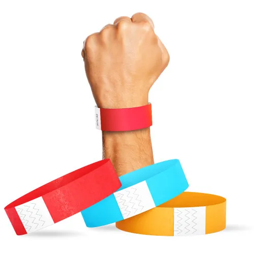

Pulseiras de Identificação
Pulseiras de Identificação Hospitalar
Agilize o atendimento e aumente a segurança do paciente com nossas pulseiras de identificação.
Precisa de outra medida? Fale com o especialista
Uso
Com cores distintas, como vermelho para casos de emergência e azul
para atendimentos não urgentes, as pulseiras auxiliam na priorização
do atendimento, obedecendo o Protocolo de Manchester.
Características
As pulseiras de identificação são uma ferramenta vital na segurança do paciente. Elas permitem que a equipe de enfermagem identifique rapidamente informações cruciais, como fatores de risco, alergias e necessidades de tratamento.
A utilização de cores distintas, alinhadas ao Protocolo de Manchester, auxilia na priorização do atendimento (vermelho para emergência, azul para não urgente), na prevenção de erros de medicação e no isolamento de pacientes, quando necessário.
Diferenciais
Personalização e Sistematização dos Processos:
As pulseiras hospitalares quando personalizadas
com código QR ou de barras possibilitam o acesso
rápido e fácil aos dados do paciente, histórico médico
e detalhes sobre o tratamento administrado. Isso agiliza
a atualização das informações, facilitando a administração de medicamentos e exames, proporcionando um tratamento eficiente e focado no bem-estar do paciente.
As pulseiras grafMED podem ser impressas nas cores e com as informações que você ou sua instituição quiserem.
Medidas e formatos
Oferecemos diversos modelos e cores para atender às necessidades de cada instituição. Entre em contato para conhecer nosso portfólio completo.
Especificações técnicas
| Uso principal | Classificação de Risco (Protocolo de Manchester) |
|---|---|
| Aplicações | Prevenção de alergias, administração de medicamentos, controle de acesso |
As etiquetas adesivas grafMED são desenvolvidas de acordo coma ABNT NBR ISO 26825:2021. Produto isento de Registro da M.S, não considerado produto para saúde.
FAQ
Perguntas frequentes
Não achou a sua dúvida? Um especialista responde pelo WhatsApp.
Perguntar no WhatsApp Ver todas as perguntasAs pulseiras servem para classificação de risco?
Sim. As pulseiras de identificação hospitalar são usadas na classificação de risco (Protocolo de Manchester) e na identificação do paciente.
Posso personalizar as pulseiras?
Sim. Cor, texto e numeração podem ser personalizados conforme a aplicação.
Vocês fazem pulseiras para eventos?
Sim. Fale com um especialista para modelos de eventos e parques.